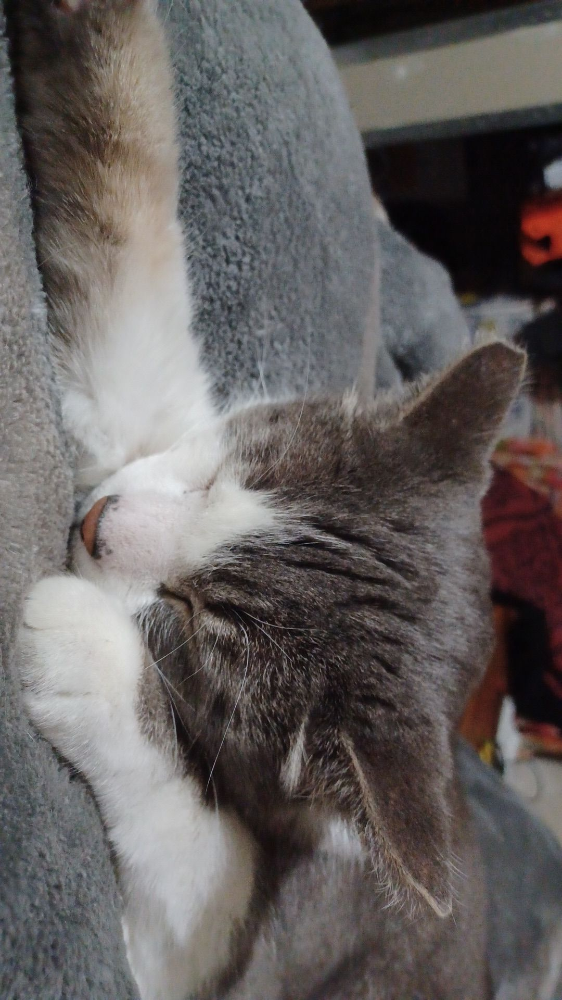
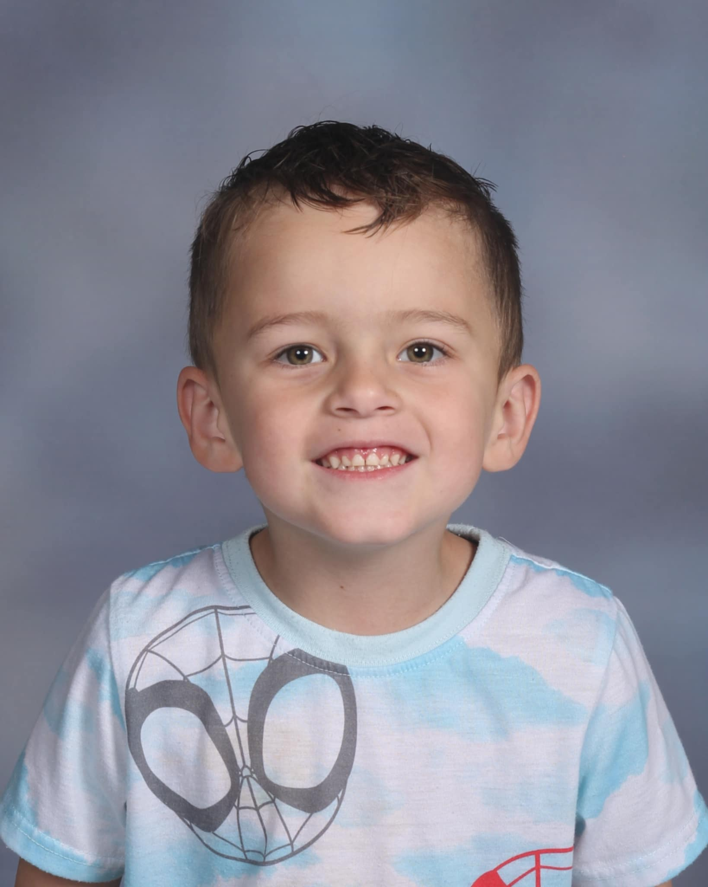
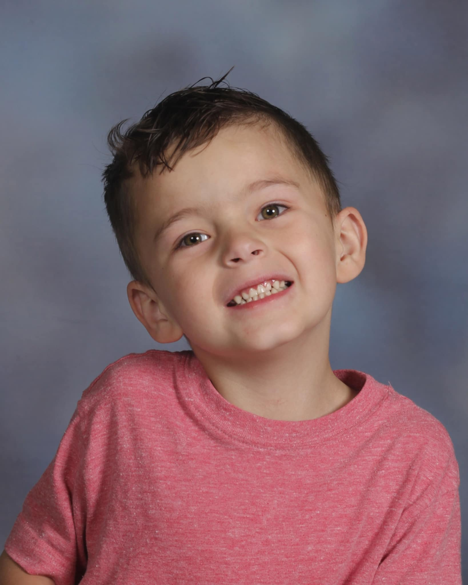
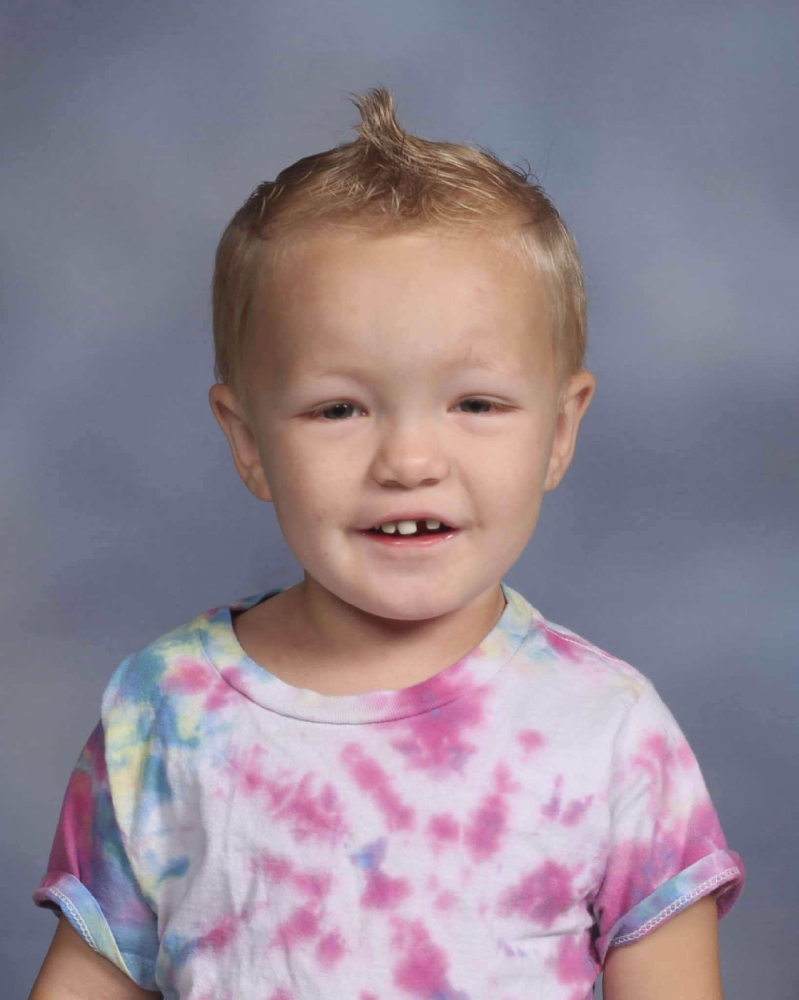
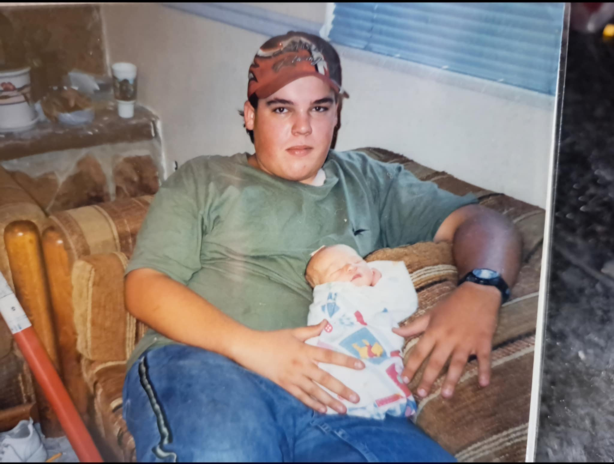
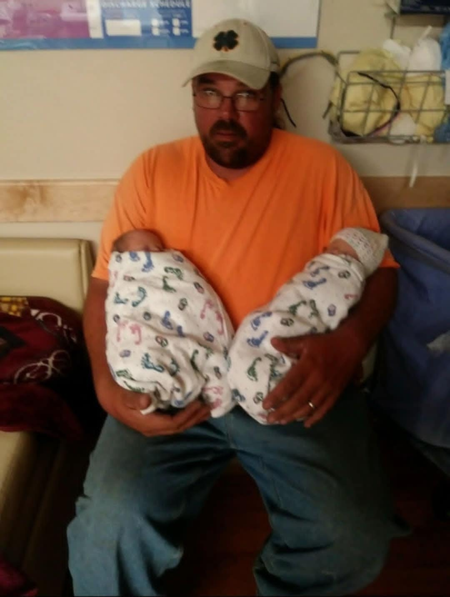
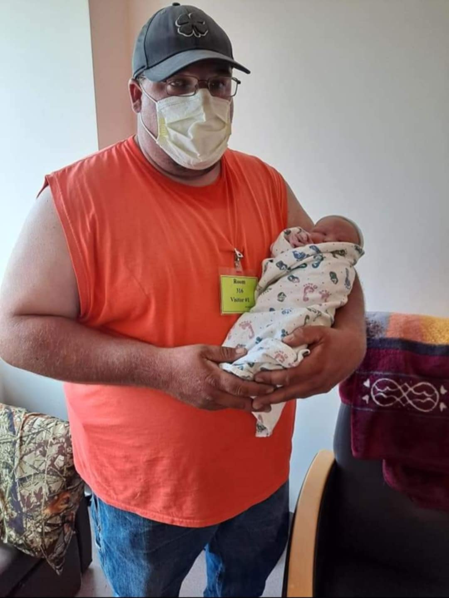
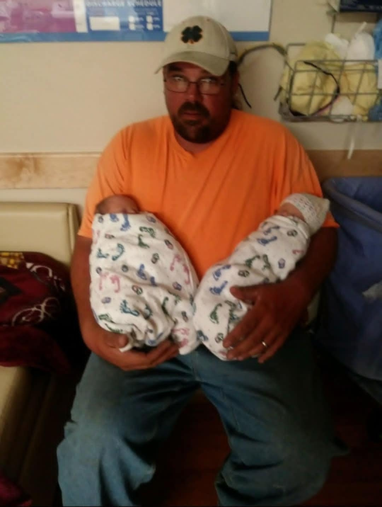
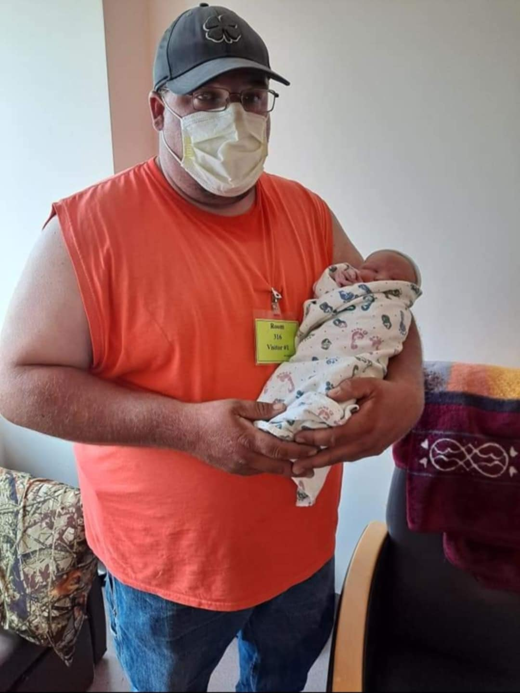

About Me
Here's all about me! My life was hard growing up and there was a lot of challenges but I got through it. I graduated at 17 and I was the first in my family to graduate. My mom got me a graduation present and that's is my cat ButterCup. I'm a single mom of 3 boys and just living day by day and I noticed that I was taking pictures a lot more and I just love doing it.
   Heres why I choose to do Tech-Moms
Here's why I choose to be a tech mom. I choose to do Tech-Moms because I'm a single mom and I need to find a way to provide for my family. The second thing is that I've always been good at computers and electronics and I find it really fun to do. Third, I told my dad about it and he was proud of me for finding this program and wanted me to do it.
Challenges
Some challenges that have occurred during the last couple of months doing Tech-Moms. Life, Life has been so hard since I started Tech-Moms, I wasn't even gonna start Tech-Moms to be honest because the week before Tech-Moms started everything went downhill. My dad went to the ER and was put on life support and got his leg amputated and is still in the hospital and there's a long road ahead of us. My mom is so strong for dealing with all this and still being there to watch my boys while I'm going to school. On October 20th I found out that my little brother passed away and it's been really hard to wrap my head around (He was only 20) but I know they would still want me to finish school even though life is hard right now.
My Father
Here's some background of what has happened. My Father went to work on the 29th and decided that he couldn't do work that day and went back home, When he got home my mother noticed that something was wrong and got my dad inside and on his oxygen and she checked his oxygen and it was at 65 and his heart rate was at 175. She told him to get in the car or she was going to call the ambulance, he decided to get in the car and they went to the hospital, The doctors didn't know how he walked in, that's how bad it was. He got admitted to the ICU and they knew that was an infection but couldn't figure out where it was. He was transferred to Utah Valley and they found out that the infection was in his left leg and they decided to amputate right above the knee and are doing dialysis to get the infection out. They've put a trach in and are trying to get him breathing on his own and he just got transferred to a Specialty Hospital. I saw him yesterday and he's doing good and he loves doing physical therapy. I heard his voice a little and it was the best thing to hear again.
 


